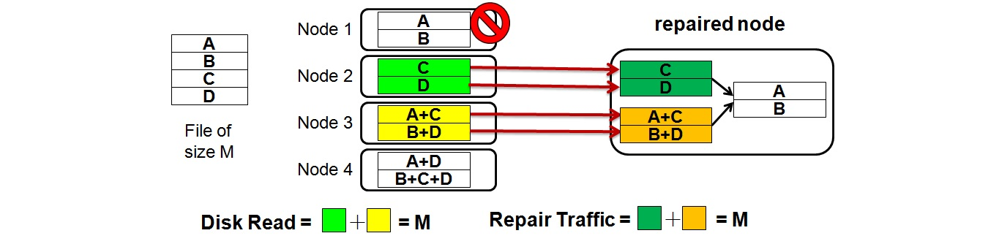
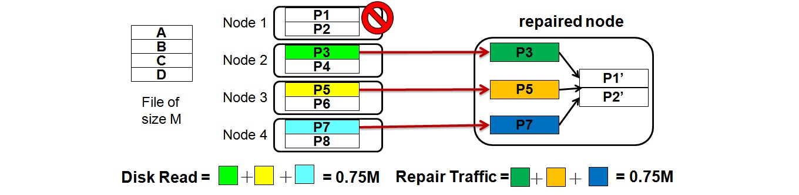

Current Studies1. Cloud Storage1.1 Network coding for inter-cloud storageBackgroundInter-cloud (or Cloud of Clouds) is viewed as the next revolution in the cloud computing paradigm wherein the computational and data infrastructure for handling scientific, business and enterprise applications spans across multi-type and multi-brand clouds and inter-cloud storage is exactly one of key parts of inter-cloud. Due to high transmission cost among inter-cloud storage nodes, it makes the difficulty of promotion for inter-cloud storage. Figure 1. Network coding based inter-cloud storage  Reed-Solomon codes (the above sub-figure) Network codes (the below sub-figure)  Figure 2. Reed-Solomon codes vs. Network codes PapersTC '14, Infocom '13, Fast '12 (See Publications for details). 1.2 Replica placement for inter-cloud storageWork in progress. 2. Heterogeneous/Hierarchical Storage2.1 Regenerating coding against hierarchical failuresWork in progress. 3. RAID for In-memory NoSQL DatabasesWork in progress. 4. Lineage for Big-data StorageWork in progress.
|